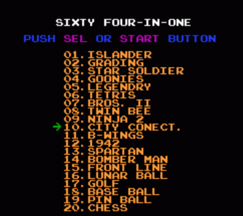
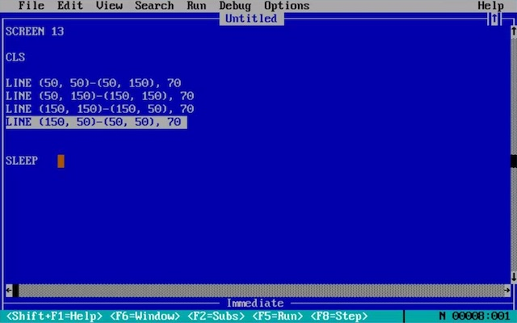
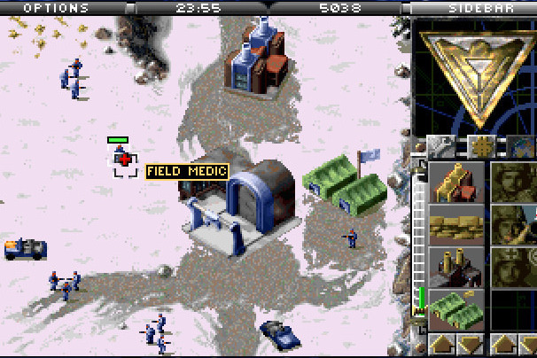
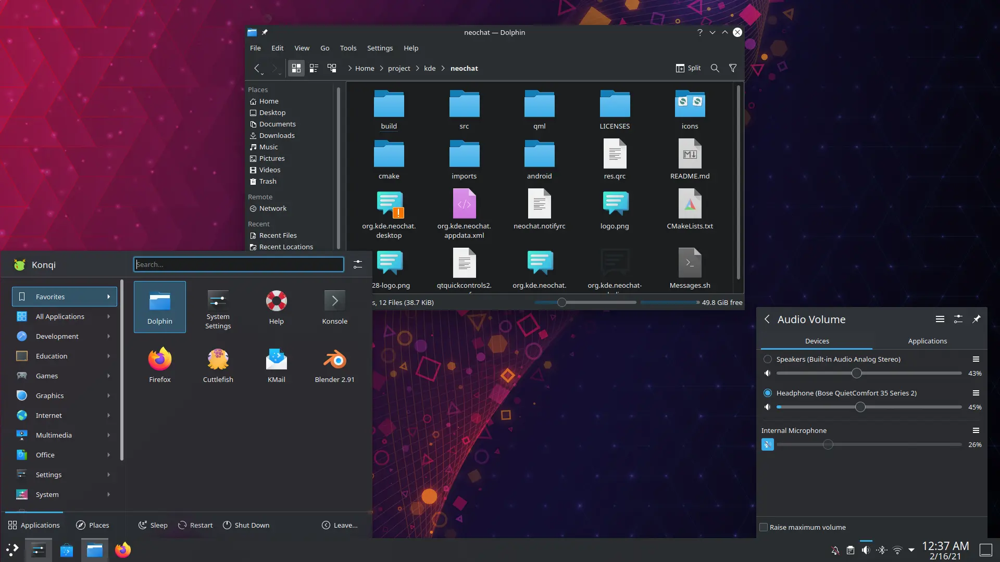

操作系统概述
本讲阅读材料
1. Operating Systems: Yet Another Three Easy Pieces
教科书上给 “操作系统” 的定义：
A body of software, in fact, that is responsible for making it easy to run programs (even allowing you to seemingly run many at the same time), allowing programs to share memory, enabling programs to interact with devices, and other fun stuff like that. (OSTEP)
生硬地说，操作系统是 “统一管理和调度计算机硬件中的各类资源、为各类应用程序和系统软件提供服务” 的软件。类似的定义可以在一万本参考书上看到。其实我认为最重要的是这句话中 “资源”、“程序” 都是包罗万象的抽象概念，其实很难理解。
要 “概括” 地帮助大家理解操作系统，我们就必须回到操作系统支持的对象：“程序”，通过“程序”-“操作系统API”-“计算机硬件” 三者之间的关系去理解操作系统是什么。
1.1 程序
你们可能觉得程序很简单，随手就能写一个：
int main() {
printf("Hello, World\n");
}
当然，如果你用 objdump 命令查看我们的程序到底编译出了什么样的指令序列，你会发现远没有你想象得那么简单 (如果你不知道这里在做什么，请选修《计算机系统基础》或阅读推荐的 CSAPP 参考书)：
$ objdump -d a.out # 反汇编
a.out: file format elf64-x86-64
Disassembly of section .init:
0000000000001000 <_init>:
1000: f3 0f 1e fa endbr64
1004: 48 83 ec 08 sub $0x8,%rsp
1008: 48 8b 05 d9 2f 00 00 mov 0x2fd9(%rip),%rax # 3fe8 <__gmon_start__>
100f: 48 85 c0 test %rax,%rax
1012: 74 02 je 1016 <_init+0x16>
1014: ff d0 callq *%rax
1016: 48 83 c4 08 add $0x8,%rsp
101a: c3 retq
Disassembly of section .plt:
0000000000001020 <.plt>:
1020: ff 35 9a 2f 00 00 pushq 0x2f9a(%rip) # 3fc0 <_GLOBAL_OFFSET_TABLE_+0x8>
1026: f2 ff 25 9b 2f 00 00 bnd jmpq *0x2f9b(%rip) # 3fc8 <_GLOBAL_OFFSET_TABLE_+0x10>
102d: 0f 1f 00 nopl (%rax)
1030: f3 0f 1e fa endbr64
1034: 68 00 00 00 00 pushq $0x0
1039: f2 e9 e1 ff ff ff bnd jmpq 1020 <.plt>
103f: 90 nop
...
此处省略 nnn 行。好像进入了未知领域……没关系，我们可以直接用汇编语言写一个 main 函数，直接返回不就好啦！
.globl main
main:
ret
把这一段代码保存成 a.S，然后使用 gcc 编译、ld 链接，这样就得到了一个 “绝对干净” 的可执行文件，只有一条指令 (上过《计算机系统基础》的同学看到熟悉的 c3 了)：
$ gcc -c a.S # 编译
$ ld -e main a.o # 链接 (-e 指定入口)
$ objdump -d a.out # 反汇编
a.out: file format elf64-x86-64
Disassembly of section .text:
0000000000401000 :
401000: c3 retq
但是运行它会发生什么呢？
$ ./a.out
Segmentation fault (core dumped)
毫不客气的段错误。为什么呢？大家可以用 gdb 工具调试一下。提示：可以使用 gdb 查看各个寄存器和内存的状态。回顾 ret 指令的语义——它将 $rsp 寄存器所指向的内存地址的 8 个字节赋值给 PC ($rip)，然后 $rsp 的数值增加 8，这时候，你能清楚地看到 ret 指令执行了什么，并且为什么会发生 segmentation fault——尽管你并不知道栈上会有那个数字，这会随着课程的进程为大家揭晓。
什么是程序？
对于操作系统上执行的程序 (也就是我们一般意义上的程序，不包括操作系统这种特殊的程序) 来说，它一旦在 CPU 上开始执行，就进入了取指令-译码-执行的循环。而它所能做的仅仅是纯粹的 “计算”——根据当前的内存/寄存器，算出一些新的数值，写入内存/寄存器中。所有的程序——不管是你刚才编写的 Hello World，还是终端、Shell、桌面管理器、游戏、游戏外挂……统统都是如此，只能执行纯粹的计算。
这里仅有一个例外，我们马上就解释。
1.2 操作系统：一组 API
如果不希望上面的程序发生 segmentation fault，也不想让程序陷入死循环 (jmp .)，我们可以稍微加一点代码，就可以退出程序并返回你想要的数值：
.globl main
main:
movq $60, %rax # exit(
movq $42, %rdi # 可以把 42 换成任意你希望的返回值
syscall # );
$ gcc a.S -c && ld -e main a.o && ./a.out
$ echo $? # 打印上一个命令的返回值
42
刚才我们所说程序 “取指令-译码-执行循环” 中，所有的指令都只能用于内存/寄存器上的计算，唯独有一类指令很特殊 (如 syscall)，它是留给操作系统的 “系统调用” 陷阱 (trap) 指令。它会停止现在程序的执行，切换处理器到高权限 (很多用户程序无法执行的指令，例如关中断等在高权限下可以执行)，并完成向操作系统代码的跳转。
系统调用 (一种典型的调用方法是通过刚才的 syscall 指令实现。严谨地说，系统调用也可能通过其他途径实现，例如操作系统和进程之间共享的内存) 是操作系统和程序之间的唯一接口。如果程序想要完成任何非纯粹计算的任务，都必须通过系统调用。包括但不限于：
- 结束自己 (
exit) 或他人 (kill)。 - 访问操作系统中的任何对象 (例如通过
write打印 Hello World)。 - 创建新的进程 (
fork)。 - 申请一段内存 (
mmap)。
你可以查看手册 syscall (2) 和 syscalls (2) 查看 Linux 系统调用的 ABI (Application Binary Interface) 和 API。你可以对照这份手册解读刚才的代码：rax 寄存器放置了系统调用的编号 (60，对应 exit)，rdi 寄存器是系统调用的第一个参数 (42，代表程序退出时的 exit code)。并且通过阅读手册，你还可以找到刚才代码的更好写法：
#include # gcc 可以为汇编代码完成预编译！
# 小习题：你能找到这个文件的路径吗？提示：使用 gcc 的编译选项
.globl main
main:
movq $SYS_exit, %rax # 头文件中定义的宏会被预编译器替换
movq $42, %rdi
syscall
你刚开始可能有点难以接受，你看到的 “计算机” 中的一切 (包括 Android 手机上的一切)，看到的图像、听到的声音、移动的鼠标光标……一切的一切都是在这一组 API 上实现的。我们将用一个学期的内容帮助大家理解重要的 Linux 操作系统 API。
操作系统：设计
很自然地我们会问：操作系统里应该有什么对象、应该提供什么样的 API 给程序访问这些对象，以赋予程序使用计算机系统硬件资源的能力？我们直接把 I/O 设备暴露给程序可不太好——试想：如果操作系统里的程序都获得对磁盘的控制权，当两个程序都想向磁盘中写入数据时，它们怎么相互协调保证写入的位置不冲突？
为了解决这些问题，操作系统里一个非常常见的设计是 “虚拟化”。例如，磁盘不适合直接提供给程序使用，那我们可以在系统中设置很多很多个 “虚拟” 磁盘，每个虚拟磁盘有它的名字，并且可以像磁盘一样随机访问——你已经猜到了，虚拟的磁盘就是 “文件”。实际上，文件作为 “一段字节序列”，具有读/写两种操作，是一种非常通用的抽象，也促成了之后 UNIX 系统的 “Everything is a file” 设计。在 Linux 中，我们可以使用文件系统 API 访问设备、系统配置、进程状态信息等。
1.3 操作系统：一个 C 程序
最后，操作系统自身也是一个程序——只不过它运行在硬件的 “高特权级”，能够执行一般用户程序无法执行的指令。总体来说，操作系统是计算机硬件启动后即在计算机上执行，直到完成第一个进程的加载之后，就 “退化” 为一个 “中断处理程序”——只在外部硬件中断 (时钟、键盘、网络等)、程序异常 (trap/fault，例如 syscall 指令、page fault) 时才会执行。操作系统会包含系统调用的处理代码，实现刚才所说的一系列 API。
简单地说，“操作系统就是个 C 程序”。没什么可怕的，我们会在这一学期的课程中向大家证明这一点。
操作系统：实现
在知道操作系统 API 的定义后，另一个问题是我们应该如何用代码实现它们——适当地借助硬件提供的机制，高效、正确地实现这组 API。这绝非易事——操作系统是世界上最早的并发程序之一，只要让大家写点并发程序，你们就知道厉害了。
操作系统实现还有很多挑战，操作系统的设计和实现是互相制约的，有时你能提出一个好的设计，却无法高效实现，就只能放弃；硬件提供的新机制可能导致新的 API 出现。我们将会在这门课中尽可能地让大家领略计算机系统实现中各种 “黑科技” 的魅力。
2. “程序-API-硬件” 的共同进化
在建立了操作系统 “程序-API-硬件” 的宏观观念以后，我们就可以循序渐进展开 “什么是操作系统” 的回答了。首先，如果让你设计一个 “最小” 的操作系统，你得有哪些对象和 API 呢？操作系统想要通用，你就得有一些 “程序” (对象) 并且可以运行它们。当然你还要给程序一个 “退出” 的机制。除此之外，你也可以实现得简单一点，允许程序能访问硬件的所有资源 (例如读取 I/O 设备)。于是，我们可以得到一个只有一个 API 的 “操作系统”。
void exec(const char *program);
还有这种操作系统？还真有。这是 NES 的 XX-in-1 “游戏合集”：

我们的操作系统的 ROM 里硬编码了 “UI”、“01”、“02”、……这些程序 (操作系统中的对象)。UI 程序会提供一个界面，直接通过访问 I/O 设备的方式使用户选择游戏 (学习过《计算机系统基础》的同学应该不会对实现这一代码感到困难)。当然我们知道 NES 游戏没有退出机制 (复位游戏机回到主界面)；不过如果游戏有退出机制的话，它们可以在退出的时候执行 exec("UI") 返回到菜单界面。
所以，如果我们把视角回到操作系统诞生和发展的时期，我们就不难理解今天操作系统中的各种设计和实现——更快的处理器、更大的内存、新的硬件机制都会带来操作系统设计的变革，以支持新的应用，再反过来对硬件设计者提出新的要求……
2.1 批处理系统
如果把时间回到 1950s，当我们 “用” 一台计算机的时候，我们总是需要管理系统中运行的程序，而这些程序又需要访问计算机中的硬件资源：磁盘、终端 (屏幕和键盘) 等等。为了解决这两个问题，尤其是在计算机的资源非常有限 (只有很少的内存，因此无法将多个程序同时加载到内存中)：
- 提出一个语言 Job Control Language (JCL) 去描述程序应该怎样被执行。
- 把计算机系统中的共享资源抽象成对象 (例如磁盘抽象成文件/目录的集合)，提供库函数给应用程序调用。
这就是 “操作系统” 这个名字诞生的时期：操作 (operate) 任务 (jobs) 的系统 (system)。DOS (Disk Operating System) 就是在磁盘出现后相应的批处理系统，例如 DOS/360 (1964年)。我们所熟知的 MS-DOS (仙剑奇侠传运行的平台) 则是微软很久以后的产品了——它可以看作是一个命令行脚本解释器，加上一组基于中断的操作系统 API，称为 MS-DOS API。
虽然看起来很简陋——甚至无法 “同时” 打开多个程序 (BASIC 语句由 IDE 直接解释执行)，但 MS-DOS API 涵盖了输入输出设备控制 (键盘、屏幕等)、文件管理、程序执行、内存分配等，从有趣的游戏到编辑程序都是没问题的。


2.2 更快的处理器、更大的内存带来了什么？
当我们的内存多到可以同时容纳多个程序的时候，让多个程序同时驻留内存共享处理器就成为很自然的需求，例如有两个程序：
void A() { // 程序 A
compute_A(); // 10ms
write_to_disk(); // 10s
}
void B() { // 程序 B
compute_B(); // 10ms
send_to_printer(); // 60s
}
在 DOS 这样的单任务系统上，我们只能按照 A → B 或者 B → A 的顺序执行。但实际上，我们的程序只会使用 20ms 的 CPU 时间，其余的时间 I/O 设备在工作，但整个计算机都是闲置的！如果 B 先执行，那 A 就要等一分多钟才能开始执行，真是个巨大的浪费。
如果我们能把两个程序都载入内存，并且能在程序之前 “切换”，就能使 CPU 和 I/O 设备并行工作，程序的执行效率不就高得多了吗？更进一步，如果在程序之前 “切换” 的代价足够小，如果我们能每隔一段时间 (如 10ms) 就切换一次，那载入内存的多个程序在一段时间里看起来不就 “同时” 运行了吗？
一点都不错——这就是现代操作系统的基本原理：操作系统代码会在中断/异常 (系统调用) 时进行进程的切换，从而即便只有一个处理器，只要程序 (甚至只需要部分) 载入内存，也可以造成很多程序同时运行的 “假象”。在这里，我们看到 “应用程序-操作系统API-计算机硬件” 之间共同的发展过程中，操作系统借助了众多处理器提供的机制：
- 中断机制，在时钟中断到来时进程切换实现处理器的分时共享。
- 虚拟存储，使程序在运行时只能访问虚拟地址空间中的数据，造成自己独占计算机系统运行的“假像” (虚拟化)。
- 保护机制，使程序在运行时不能任意访问系统资源 (例如I/O设备)，越权访问引发异常，从而系统中有缺陷的进程不会使整个系统崩溃——一个例子是死循环。如果在关闭中断的情况下死循环，整个系统将被卡死，但因为应用程序无权管理中断，所以操作系统总能在中断到来时被“强制”运行，调度其他程序执行。
在此基础上，UNIX 完成了一些非常经典的设计，包括 UNIX 文件系统、信号和管道……成为了当今操作系统家族树中最重要的祖先，也是 POSIX (Portable Operating System Interface of UNIX) 的基础。有兴趣的同学不妨尝试一下教学操作系统 xv6，它一共有 21 个系统调用，就可以启动完整的 Shell (user.h)：
// 进程管理
int fork(void);
int getpid(void);
int exec(char*, char**);
int exit(int) __attribute__((noreturn));
int wait(int*);
// 内存管理
char* sbrk(int);
// 文件 (和设备) 管理：Everything is a file
int open(const char*, int);
int close(int);
int write(int, const void*, int);
int read(int, void*, int);
int mknod(const char*, short, short);
int unlink(const char*);
int fstat(int fd, struct stat*);
int link(const char*, const char*);
int mkdir(const char*);
int chdir(const char*);
int dup(int);
// 进程间通信
int pipe(int*);
int kill(int);
// 时间管理
int sleep(int);
int uptime(void);
如果大家对刚才 man syscalls 的结果还有印象，你会在 Linux 的系统调用中找到它们的全部！Linux 今天的系统调用支撑了个人电脑、智能手机、集群服务器上的 “任何” 应用程序。

操作系统：设计与实现
当然了，今天的应用程序可不是 21 个 API 就能满足的了的。你能举出一些更复杂的例子，它们是否需要 “特别” 的 API？这些 API 应该如何实现？你可以想到的例子有：浏览器、打印进程树、调试器、追踪器 (trace)、虚拟机、数据库、杀毒软件……
我们将在这个学期里讲解现代操作系统的设计与实现。